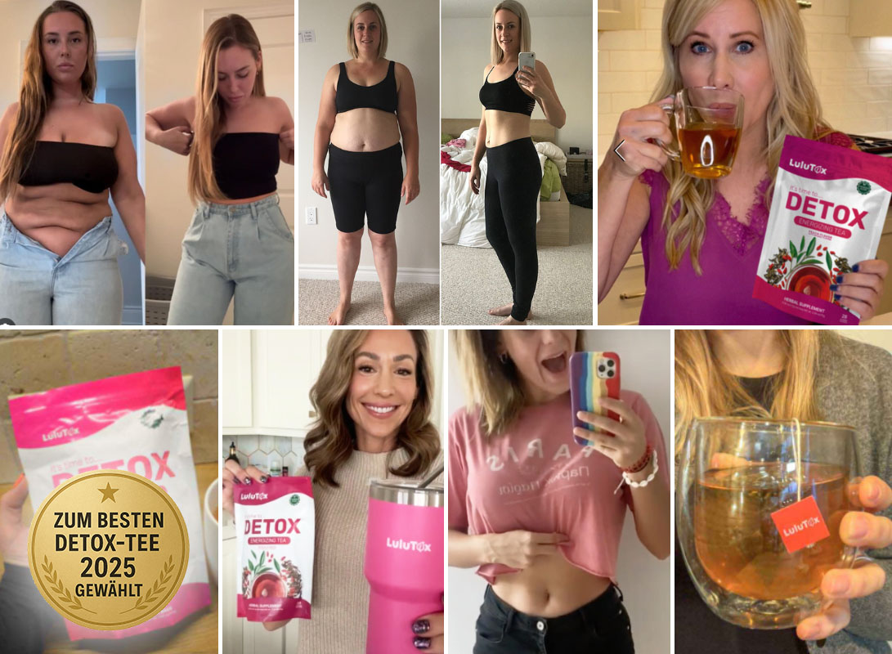
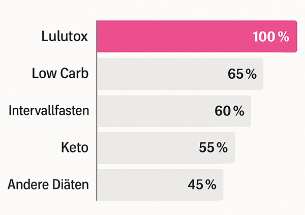

Wie viel Gewicht können Sie mit Lulutox verlieren?
Machen Sie den kurzen Quiz – wir berechnen Ihre potenzielle Gewichtsabnahme und erstellen eine individuelle Teemischung, die perfekt zu Ihrem Ziel, Körper und Stoffwechsel passt.
Welches Ziel möchten Sie erreichen?
Was ist Ihr Geschlecht?
Geschlecht und Hormone haben einen Einfluss auf den Stoffwechsel.
Weiblich
Männlich
Wie alt sind Sie?
Über 27.000 zufriedene Kunden sprechen für sich!

Mit Lulutox setzen Sie auf eine wissenschaftlich belegte Methode, um nachhaltig Gewicht zu verlieren und den Körper zu entgiften – ganz ohne strenge Diäten oder anstrengende Workouts. Kein Wunder, dass Lulutox 2025 bereits als einer der effektivsten Detox- und Abnehmtees gefeiert wurde!
Wie groß sind Sie?
Bitte geben Sie Ihre Körpergröße ein (cm)
Bitte geben Sie eine realistische Körpergröße ein (zwischen 150 cm und 250 cm)
Wie hoch ist Ihr Gewicht?
Bitte geben Sie Ihr derzeitiges Gewicht ein (kg)
Bitte geben Sie ein realistisches Gewicht ein (zwischen 50 kg und 200 kg)
Was ist Ihr Zielgewicht?
Bitte geben Sie Ihr Zielgewicht ein (kg)
Bitte geben Sie einen realistischen Wert ein. Der Unterschied zwischen Ihrem aktuellen Gewicht und Ihrem Zielgewicht sollte nicht mehr als 50 kg betragen
Lulutox erzielt 55 % nachhaltigere Abnehmerfolge als herkömmliche Diäten.

Lulutox wurde von der Charité – Universitätsmedizin Berlin untersucht:
7 von 10 Teilnehmern verloren im Schnitt 6 kg pro Monat
87 % berichten bessere Verdauung & weniger Blähungen
94 % fühlen sich fitter & leichter
Ohne Hungern. Ohne anstrengende Workouts.
Wie gut fühlen Sie sich aktuell in Bezug auf Ihre Energie und Leistungsfähigkeit?
Wie oft bewegen oder sportlich betätigen Sie sich aktuell?
Was fällt Ihnen aktuell am schwersten, wenn es ums Abnehmen geht?
Antworten werden analysiert...
Unsere Berechnungen zeigen: Bis zum 16. Juni 2025 können Sie ein Gewicht von 55 erreichen.
Ihr aktueller BMI: Übergewicht!(77kg, 166cm)
Aktuell: 77kg
Ziel: 55kg
Körperfett: 30-40%
Körperfett: 24-34%
Ihre individuelle Lulutox-Teemischung ist bereit!
Spezialrabatt von 70% aktiviert – gültig für die nächsten 09:44
Bin absolut begeistert! Ich habe Lulutox jetzt schon mehrfach bestellt. Klar, der Preis ist etwas höher, aber die Wirkung spricht für sich: weniger Heißhunger, bessere Verdauung und schon sichtbare Erfolge beim Gewicht. Für mich jeden Cent wert!
Lena Fischer
Am
Verifizierter Kauf
Die Seite versprach bis zu 6 kg, bei mir waren es „nur“ 3 kg – aber dafür fühle ich mich fitter als seit Jahren! Der Tee schmeckt super, ich bin viel weniger müde, habe mehr Energie im Alltag und endlich wieder Lust auf Bewegung. Ich mache auf jeden Fall weiter!
Patrick Schuster
Am
Verifizierter Kauf
Ich wollte eigentlich nur ein paar Kilo verlieren, aber Lulutox hat viel mehr verändert. Schon nach wenigen Tagen war ich wacher, fitter und hatte spürbar mehr Energie. Nach 4,5 kg weniger in einem Monat (ohne große Diät!) bin ich motivierter denn je. Selbst meine Frau trinkt ihn jetzt, weil sie sieht, wie gut es mir geht. Für uns beide ein absoluter Gamechanger!
Vanessa Böhm
Am
Verifizierter Kauf
Bisher bin ich sehr zufrieden mit Lulutox. Schon nach kurzer Zeit habe ich bemerkt, dass ich weniger aufgebläht bin und mich insgesamt leichter fühle. Ich bin gespannt auf die weiteren Ergebnisse in den nächsten Wochen!
Hannah Becker
Am
Verifizierter Kauf
War am Anfang echt skeptisch… Abnehmen nur mit Tee? Dachte mir aber dann, na gut, probier ich halt mal aus. Und was soll ich sagen: nach paar Tagen schon weniger Blähbauch, mehr Energie und ich fühl mich irgendwie leichter. 2 kg sind runter, aber wichtiger is wie gut ich mich fühl. Hätte ich echt nicht gedacht!
Sandra Mayer
Am
Verifizierter Kauf
Hab gedacht es geht vllt schneller, aber nach 3 Wochen 2,5 kg weg is ja auch nicht schlecht. Tee schmeckt gut und ich hab nicht mehr so viel Heißhunger abends. Ich bleib dran, denke es wird noch besser.
Thomas Koch
Am
Verifizierter Kauf
Lieferung war super schnell. Tee schmeckt gut, wie immer alles top. Nehm ihn jetzt zum 3. Mal und bin jedesmal zufrieden. Danke euch, macht weiter so :)
Carina
Am
Verifizierter Kauf
Ganz okay, aber keine Wunder erwarten. Der Tee schmeckt ganz gut, und ich merke, dass meine Verdauung etwas besser geworden ist. Allerdings habe ich in vier Wochen nur 1 kg abgenommen – ich hatte mir mehr erhofft. Vielleicht funktioniert es bei anderen besser, aber für mich war der Effekt eher mild
Sebastian O.
Am
Verifizierter Kauf
Also der Tee is echt gut, schmeckt angenehm und mein Bauch fühlt sich irgendwie weniger aufgebläht an. Nach 4 Wochen halt nur 1 Kilo runter, hatte mir bisschen mehr erhofft. Vielleicht kommt noch was, ich bleib mal dran 😅
Nicole Krämer
Am
Verifizierter Kauf
Ich hätte nie gedacht, dass ein Tee meinen Kaffee ersetzen kann, aber Lulutox hat es geschafft. Ich trinke ihn seit drei Wochen jeden Morgen statt Kaffee und fühle mich energiegeladener als je zuvor. Kein Sodbrennen mehr, keine Nervosität – nur pure, natürliche Energie!
Markus Wagner
Am
Verifizierter Kauf
Ich habe immer zwei Tassen Kaffee gebraucht, um wach zu werden. Seit ich Lulutox trinke, brauche ich das nicht mehr! Der Tee gibt mir einen sanften Energieschub und hält mich den ganzen Tag über fokussiert – ohne Koffein-Crash. Außerdem habe ich weniger Heißhunger – ein echter Gamechanger 😂
Jonas F.
Am
Verifizierter Kauf
Früher brauchte ich 2 Kaffee um halbwegs wach zu werden 🙈 Jetzt reicht mein Lulutox morgens und ich bin fit für den ganzen Tag. Kein Zittern mehr, kein Crash am Nachmittag. Und Heißhunger hab ich auch viel weniger. Für mich absoluter Gamechanger.
Marie Hoffmann
Am
Verifizierter Kauf
Nach 4 Wochen 3 Kilo weniger und ich fühl mich fitter denn je. Was mich aber überrascht hat: ich bin viel entspannter und weniger gestresst. Ob’s an der Entgiftung liegt oder an der Energie, keine Ahnung. Aber ich bleib auf jeden Fall dabei.
Theresa B.
Am
Verifizierter Kauf
Ich dachte erst, das wäre wieder so ein Hype-Produkt, aber ich wurde eines Besseren belehrt. Nach zwei Wochen merke ich, dass ich weniger Heißhunger habe und mich insgesamt leichter und ausgeglichener fühle. Lulutox ist definitiv kein Fake!
Vanessa C.
Am
Verifizierter Kauf
Ich liebe diesen Entgiftungstee! Ich trinke ihn jetzt seit etwa zwei Monaten einmal am Tag und mein Magen fühlt sich schon viel besser an. Das hat mich dazu angetrieben, mich besser zu ernähren und mehr Sport zu treiben! Diesen Sommer gefällt mir vielleicht sogar, wie ich in meinem Badeanzug aussehe. 😍
Sofia Eckstein
Am
Verifizierter Kauf
Dachte erst, das wär wieder so’n Internet-Hype... aber wurde positiv überrascht. Nach 2 Wochen merk ich weniger Heißhunger und fühl mich einfach leichter und ausgeglichener. Also kein Fake – bin sehr zufrieden.
Elena Baumann
Am
Verifizierter Kauf
Nach drei Wochen kann ich eine positive Bilanz ziehen: 4 Kilo weniger und deutlich mehr Energie. Das hätte ich wirklich nicht erwartet
Lisa Pohl
Am
Verifizierter Kauf
War zu faul für Sport 😅 dachte ich probier mal den Tee. Überraschung: hab mehr Energie, fühl mich leichter und geh jetzt sogar freiwillig mehr raus. Kilos purzeln quasi nebenbei, mega!
Patrick Schuster
Am
Verifizierter Kauf
Ich trinke Lulutox seit vier Wochen und habe 4 kg abgenommen. Ich fühle mich insgesamt leichter und weniger aufgebläht, was echt super ist! Allerdings musste ich mich erst an den Geschmack gewöhnen – er ist nicht schlecht, aber etwas intensiver als erwartet. Mit etwas Zitrone oder Honig geht’s aber gut. Insgesamt ein solides Produkt, das hält, was es verspricht!
Markus Schäfer
Am
Verifizierter Kauf
Trinke Lulutox seit 4 Wochen, 4 Kilo weg, fühl mich leichter und weniger aufgebläht. Geschmack war anfangs bisschen gewöhnungsbedürftig, aber mit Zitrone oder Honig geht’s super. Insgesamt echt gutes Produkt!
Maja Arnold
Am
Verifizierter Kauf
LOB an den tollen KUNDENSERVICE. Wirklich schnelle Antwort bei Problemen. Ihr habt mir viel geholfen!!!!
Ronja Vogt
Am
Verifizierter Kauf
Alles gut soweit.
Claudia Frank
Am
Verifizierter Kauf
Hatte erst bissl Probleme bei der Bestellung, aber der Kundenservice war total nett und hat alles super schnell geregelt. Top Service, würd jederzeit wieder bestellen 👍
Carina Scholz
Am
Verifizierter Kauf
Lieferung war mega schnell! Und die Ergebnisse echt krass: 6 Kilo weniger in 2 Monaten, ganz ohne Diätstress. Einfach morgens den Tee trinken, fertig. Fühl mich fitter, leichter und hab endlich keine schweren Beine mehr beim Laufen. Absolute Empfehlung!
Jetzt risikofrei testen – 100% Zufriedenheitsgarantie oder Geld zurück!
Haftungsausschluss: Ergebnisse können variieren. Keine medizinische Beratung. Vor der Anwendung bitte Arzt konsultieren. Werbung: Diese Seite enthält Werbeinhalte. Der Betreiber erhält ggf. Vergütung bei Käufen. Abgebildete Personen sind Models.